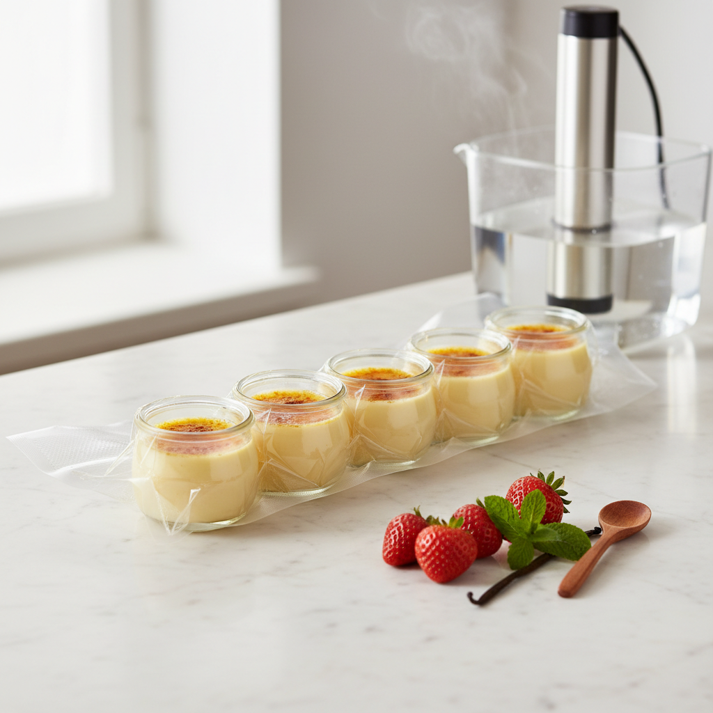

Sous-Vide-Desserts mit dem Vakuumierer: Crème Brûlée, Cheesecake im Glas und pochiertes Obst auf den Punkt

TL;DR
Sous-Vide-Garen revolutioniert die Zubereitung von Desserts! Mit präziser Temperaturkontrolle gelingen Klassiker wie Crème Brûlée und Cheesecake im Glas perfekt. Diese Methode sorgt für gleichmäßige Texturen und intensive Aromen, von cremig bis fruchtig. Erfahrungsberichte aus der Vakuumier-Werkstatt zeigen, wie Sie mit Ihrem Vakuumierer und Sous-Vide-Gerät ganz einfach beeindruckende süße Kreationen zaubern. Entdecken Sie die Welt der perfekten Desserts!
Desserts auf den Punkt: Sous-Vide-Magie mit Ihrem Vakuumierer
Die Sous-Vide-Methode, einst primär in der Sterneküche für Fleisch und Fisch gefeiert, hat längst die Welt der Desserts erobert. Und das zu Recht! Wenn Sie Ihren Vakuumierer schon schätzen gelernt haben, dann wird Sie die Anwendung im süßen Bereich absolut begeistern. Das Geheimnis liegt in der unerreichten Präzision der Temperaturkontrolle. Schluss mit dem Risiko von über- oder unterkühlten Desserts, klumpigen Cremes oder ungleichmäßig gegartem Obst. Mit Sous-Vide erreichen Sie Konsistenzen und Aromen, die auf herkömmliche Weise kaum zu erzielen sind. Lassen Sie uns gemeinsam eintauchen in die faszinierende Welt der Sous-Vide-Desserts und entdecken, wie einfach es ist, Klassiker wie Crème Brûlée, Cheesecake im Glas, pochierte Früchte oder Schoko-Pots auf ein neues Niveau zu heben. Aus meiner eigenen „Vakuumier-Werkstatt“ kann ich Ihnen versichern: Diese Methode ist eine Bereicherung für jede Küche!
Warum Sous-Vide für Desserts? Die Vorteile für Genuss und Einfachheit
Bevor wir uns den Rezepten widmen, lassen Sie uns kurz beleuchten, was Sous-Vide für Ihre süßen Kreationen so besonders macht:
- Perfekte Texturkontrolle: Dies ist der größte Pluspunkt. Bei Sous-Vide garen die Lebensmittel in einem exakt temperierten Wasserbad. Das bedeutet, dass die Temperatur im Inneren des Desserts nie die gewünschte Kerntemperatur überschreitet. Das Resultat sind seidige Cremes, die nicht gerinnen, perfekt gebundene Cheesecakes, die trotzdem saftig bleiben, und Obst, das zart wird, ohne matschig zu werden.
- Intensiveres Aroma: Durch das Vakuumieren werden die Aromen eingeschlossen und können sich während des Garprozesses optimal entfalten. Ebenso können Aromen von Gewürzen oder Flüssigkeiten (wie Rotwein oder Likör) tiefer in das Gargut eindringen.
- Gleichmäßigkeit: Von der Mitte bis zum Rand – Sous-Vide sorgt für eine vollkommen gleichmäßige Garung. Das ist besonders bei empfindlichen Zutaten wie Eigelb entscheidend.
- Vorhersehbare Ergebnisse: Einmal die richtige Temperatur und Zeit gefunden, ist das Ergebnis jedes Mal reproduzierbar. Das gibt Ihnen die Sicherheit, auch Gäste zu beeindrucken, ohne erst „auf gut Glück“ arbeiten zu müssen.
- Einfachheit und Zeitersparnis: Viele Sous-Vide-Desserts lassen sich gut vorbereiten. Sie können sie im Wasserbad garen lassen, während Sie etwas anderes tun, und dann im Kühlschrank aufbewahren, bis sie serviert werden. Das finale Finish (z.B. Karamellisieren der Crème Brûlée) geht oft sehr schnell.
- Weniger Abfall: Dank der präzisen Garung und des Aromaschutzes gibt es weniger misslungene Versuche und somit weniger Lebensmittel, die weggeworfen werden müssen.
Die Werkzeuge: Mehr als nur ein Vakuumierer
Um mit Sous-Vide Desserts zuzubereiten, benötigen Sie im Grunde zwei Hauptkomponenten:
- Ein Vakuumierer: Dies ist unerlässlich, um die Lebensmittel luftdicht zu verpacken. Die Vakuumbeutel verhindern, dass Wasser in das Dessert eindringt und sorgen gleichzeitig dafür, dass die Aromen und Feuchtigkeit bestmöglich erhalten bleiben.
- Ein Sous-Vide-Garer (Präzisionskocher oder Tauchsieder): Dieses Gerät erhitzt und hält das Wasser in einem Behälter (oft ein Topf oder ein spezielles Becken) auf einer exakt eingestellten Temperatur.
Optional, aber hilfreich:
- Passende Behälter: Spezielle Sous-Vide-Becken erleichtern die Handhabung, aber ein großer Topf tut es meist auch.
- Schutzmatten: Um Ihren Arbeitsplatz vor Spritzwasser zu schützen.
Die Temperatur-Tabelle für Sous-Vide-Desserts: Ihre Referenz
Die folgenden Werte sind Richtlinien, die sich in meiner Praxis bewährt haben. Kleine Anpassungen je nach Größe und Reife der Zutaten sowie der Leistung Ihres Geräts können immer notwendig sein. Übung macht auch hier den Meister!
| Dessert | Temperatur (°C) | Zeit | Anmerkungen |
|---|---|---|---|
| Crème Brûlée (klassisch) | 75 | 45-60 Min. | Für seidige Konsistenz. Nach dem Garen gut kühlen und vor dem Servieren kurz karamellisieren. |
| Cheesecake im Glas | 75 | 60-90 Min. | Konstante Temperatur sorgt für cremige, gleichmäßige Konsistenz ohne Risse. Länger garen bei höheren Gläsern. |
| Schoko-Pots (Schokomousse) | 70 | 30-45 Min. | Sorgt für geschmeidige, puddingartige Textur. Nicht überhitzen! |
| Obst-Kompott (Beeren) | 85 | 10-20 Min. | Erhält die Fruchtform und intensiviert den Geschmack, ohne zu zerfallen. |
| Birnen in Rotwein | 85 | 60-90 Min. | Die Birnen werden zart, nehmen den Rotwein gut auf und behalten ihre Form. |
| Karamell-Pudding | 75 | 45-60 Min. | Ähnlich wie Crème Brûlée, für eine seidige, nicht grieselige Konsistenz. |
Hinweis zur Zeit: Die Zeiten sind Richtwerte für übliche Portionsgrößen. Größere oder tiefere Behälter benötigen tendenziell etwas mehr Zeit, um die Kerntemperatur zu erreichen.
Schritt-für-Schritt Anleitung: Von der Idee zum perfekten Dessert
Lassen Sie uns einige beliebte Beispiele durchgehen:
1. Die perfekte Crème Brûlée im Glas
Die Crème Brûlée ist ein Paradebeispiel dafür, wie Sous-Vide Glätte und Cremigkeit auf ein neues Niveau hebt.
Zutaten-Grundidee:
- Eigelb
- Zucker
- Sahne
- Vanille (Mark oder Extrakt)
- Optional: Ein Schuss Likör (z.B. Grand Marnier)
Zubereitung:
- Vorbereiten der Masse: Schlagen Sie Eigelb mit Zucker cremig, aber nicht schaumig. Erhitzen Sie die Sahne mit der Vanille (und optional dem Likör) leicht, aber nicht kochen lassen. Gießen Sie die warme Sahne unter ständigem Rühren langsam zur Eigelb-Zucker-Mischung (Temperaturtransfer!).
- Abfüllen in Gläser: Gießen Sie die Mischung in kleine, ofenfeste Gläser oder Förmchen, die sous-vide-tauglich sind. Die Gläser sollten nicht randvoll gefüllt sein.
- Vakuumieren: Nun kommt der Vakuumierer ins Spiel. Stellen Sie sicher, dass die Ansaugoberfläche des Vakuumierers sauber und trocken ist. Legen Sie die gefüllten Gläser (ggf. mit Alufolie abgedeckt, um ein Ansaugen von Flüssigkeit zu verhindern) in einen Vakuumierbeutel und vakuumieren Sie diesen. Alternativ können Sie die Gläser auch direkt in den Vakuumierbeutel stellen und den Beutel dann evakuieren, ohne die Gläser fest zu versiegeln, wenn Sie sicher sind, dass das Vakuum nicht zu stark ist. Ein leichtes Vakuum reicht hier oft, um die Luft zu entziehen, ohne die Cremigkeit zu beeinträchtigen. Wichtig: Achten Sie darauf, dass der Versiegelungsstreifen des Beutels frei von Flüssigkeit bleibt.
- Sous-Vide garen: Platzieren Sie die vakuumierten Gläser in Ihrem temperierten Wasserbad (siehe Tabelle für Crème Brûlée: 75°C für 45-60 Minuten).
- Abkühlen: Nehmen Sie die Gläser vorsichtig aus dem Wasserbad und lassen Sie sie auf Raumtemperatur abkühlen. Danach stellen Sie sie für mindestens 2-3 Stunden, besser über Nacht, in den Kühlschrank.
- Finalisieren: Vor dem Servieren bestreuen Sie die gekühlte Oberfläche mit einer dünnen Schicht Zucker. Mit einem Küchenbrenner karamellisieren Sie den Zucker zu einer knackigen Kruste. Voilà – die perfekte Crème Brûlée!
2. Seidiger Cheesecake im Glas
Die Herausforderung bei klassischem Cheesecake ist oft, eine gleichmäßige, cremige Textur ohne Risse zu erzielen. Sous-Vide löst dieses Problem elegant.
Zutaten-Grundidee:
- Frischkäse
- Zucker
- Eier
- Sahne
- Zitronenschale oder Vanille
- Optional: Keksboden (kann separat vakuumiert und als Krümel darauf gegeben werden)
Zubereitung:
- Cheesecake-Masse: Verrühren Sie alle Zutaten für die Cheesecake-Masse sanft miteinander, bis eine glatte Masse entsteht. Nicht zu stark schlagen, um zu viel Luft einzuarbeiten.
- Abfüllen: Füllen Sie die Masse in hitzebeständige Gläser. Wenn Sie einen Keksboden möchten, geben Sie diesen zuerst in das Glas und füllen Sie dann die Cheesecake-Masse darüber.
- Vakuumieren: Verschließen Sie die Gläser gut. Um sie im Vakuumierbeutel zu transportieren, legen Sie die verschlossenen Gläser vorsichtig in einen ausreichend großen Vakuumierbeutel. Vakuumieren Sie diesen vorsichtig. Alternativ können Sie die Gläser auch mit Alufolie abdecken und dann in den Beutel legen.
- Sous-Vide garen: Garen Sie die vakuumierten Gläser im Wasserbad bei 75°C für ca. 60-90 Minuten. Die längere Garzeit bei gleichzeitig niedrigerer Temperatur verhindert das Überhitzen und macht den Cheesecake unglaublich cremig.
- Kühlen: Lassen Sie die Gläser nach dem Garen langsam abkühlen und stellen Sie sie dann für mindestens 4 Stunden, idealerweise über Nacht, in den Kühlschrank.
- Servieren: Vor dem Servieren können Sie die Gläser noch mit frischen Früchten, Fruchtsauce oder eben der Keksbrösel-Schicht garnieren.
3. Aromatisches pochiertes Obst
Obst bekommt durch Sous-Vide eine zarte Konsistenz und nimmt Aromen wunderbar auf. Ideal für feine Desserts oder als Beilage.
Zutaten-Grundidee:
- Obst Ihrer Wahl (Äpfel, Birnen, Pfirsiche, etc.)
- Flüssigkeit (Wasser, Saft, Wein, Sirup)
- Zucker (nach Geschmack)
- Gewürze (Zimtstangen, Sternanis, Vanilleschoten, Nelken)
- Optional: Ein Schuss Likör oder Zitronensaft
Zubereitung:
- Vorbereiten: Schälen und entkernen Sie das Obst je nach Sorte. Schneiden Sie es in mundgerechte Stücke oder lassen Sie es bei kleineren Früchten ganz.
- Marinieren/Vakuumieren: Geben Sie das Obst zusammen mit der Flüssigkeit, dem Zucker und den Gewürzen in einen Vakuumierbeutel. Vakuumieren Sie den Beutel gut.
- Sous-Vide garen: Pochieren Sie das Obst bei ca. 85°C für etwa 10-